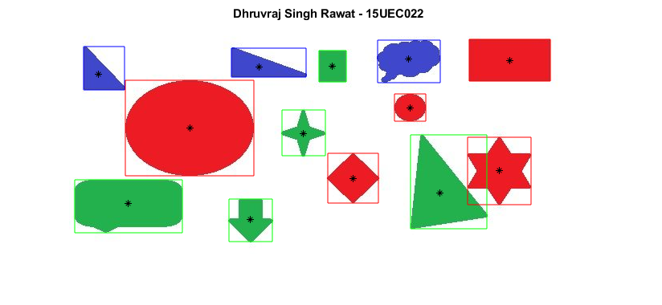

x=imread('image_1.jpg');
x_gray = rgb2gray(x);
y_red=x(:,:,1);
y_green=x(:,:,2);
y_blue=x(:,:,3);
red=imsubtract(y_red,x_gray);
red_binary=imbinarize(red);
box_r=bwconncomp(red_binary);
reg_r=regionprops(red_binary,'all');
green=imsubtract(y_green,x_gray);
green_binary=imbinarize(green);
box_g=bwconncomp(green_binary);
reg_g=regionprops(green_binary,'all');
blue=imsubtract(y_blue,x_gray);
blue_binary=imbinarize(blue);
box_b=bwconncomp(blue_binary);
reg_b=regionprops(blue_binary,'all');
imshow(x);
NumObjects_r=size(reg_r);
NumObjects_r=NumObjects_r(1);
NumObjects_g=size(reg_g);
NumObjects_g=NumObjects_g(1);
NumObjects_b=size(reg_b);
NumObjects_b=NumObjects_b(1);
hold on
for i=1:NumObjects_r
rectangle('Position',reg_r(i,1).BoundingBox,'EdgeColor','r');
plot(reg_r(i,1).Centroid(1), reg_r(i,1).Centroid(2), 'w*');
end
for i=1:NumObjects_g
rectangle('Position',reg_g(i,1).BoundingBox,'EdgeColor','g');
plot(reg_g(i,1).Centroid(1), reg_g(i,1).Centroid(2), 'w*');
end
for i=1:NumObjects_b
rectangle('Position',reg_b(i,1).BoundingBox,'EdgeColor','b');
plot(reg_b(i,1).Centroid(1), reg_b(i,1).Centroid(2), 'w*');
end
title('Dhruvraj Singh Rawat - 15UEC022 ');
hold off
